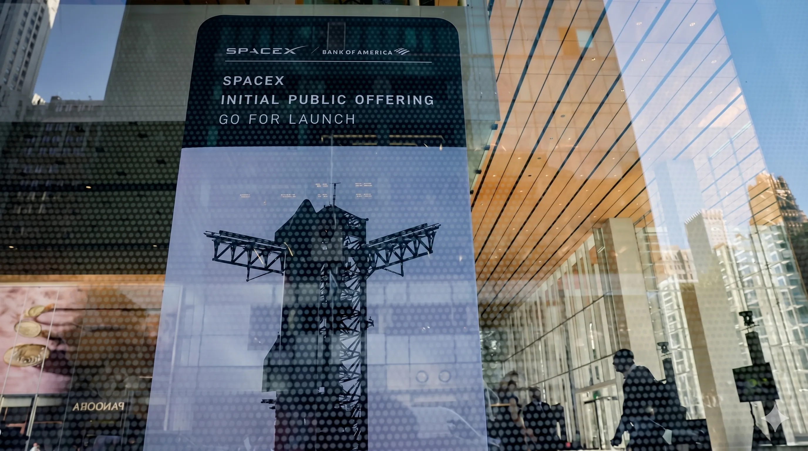

SpaceX IPO June 12, 2026: How to Buy SPCX at $135/Share — World's Largest IPO Guide, $0 Minimum Brokerages, International Access & 6 Key Risks

Table of Contents
- SpaceX IPO 2026 at a Glance — Key Numbers & Dates
- Why This Is the World's Largest IPO in History
- How to Buy SpaceX IPO Shares — Step-by-Step Guide
- Brokerage Requirements Compared (Full Table)
- International Investors — Which Countries Can Participate
- Anti-Flipping Rules You Must Know Before Buying
- SpaceX Business Overview — Rockets, Starlink & AI
- 6 Key Risks of Buying SPCX at IPO Price
- Frequently Asked Questions (FAQ)
- Conclusion
The SpaceX IPO 2026 is the most significant financial event of this decade, and quite possibly the most historic initial public offering in the 200-year history of modern stock markets. With a fixed offering price of $135 per share under the ticker symbol SPCX, SpaceX is set to begin trading on the Nasdaq on Friday, June 12, 2026 — raising up to $85.7 billion at a total company valuation of approximately $1.75 trillion. That number alone eclipses Saudi Aramco's 2019 world record and puts SpaceX in a category completely its own.
But the numbers only tell part of the story. SpaceX is not just a rocket company. It is simultaneously the world's dominant launch provider (controlling over 80% of all global orbital rocket launches), the operator of the planet's largest and fastest-growing satellite internet network (Starlink), and an emerging force in artificial intelligence and autonomous spacecraft systems. For the first time since the company was founded by Elon Musk in 2002, ordinary retail investors — including those outside the United States — will have the legal opportunity to own a piece of that future.
This comprehensive guide covers everything you need to know: the exact numbers behind the offering, a step-by-step process to submit your indication of interest before the June 11, 2026 pricing deadline, a full comparison of all five authorized brokerages, international access details for 15+ countries, the strict anti-flipping rules that could get you banned from future IPOs, and a brutally honest assessment of the six key risks every investor must understand before buying SPCX.
Key Takeaways
- Ticker & Exchange: SPCX on Nasdaq (and Nasdaq Texas); trading begins June 12, 2026.
- IPO Price: $135 per share, fixed. Valuation: ~$1.75 trillion. Total raise: up to $85.7 billion.
- 5 Authorized Brokerages: Fidelity ($2,000 min), Robinhood ($0), SoFi ($0), Charles Schwab ($100K), E*Trade (varies).
- Deadline: Submit indication of interest by June 11, 2026 to be eligible for IPO allocation.
- International Access: 15+ countries confirmed, including UK, India, Australia, UAE, Japan, Germany, and more.
- Demand: More than 2x oversubscribed — most retail investors will receive partial or zero allocation.
- Risk: Priced at ~110x trailing revenue with no near-term path to profitability and a tiny 4% free float.
SpaceX IPO 2026 at a Glance — $135 Per Share, $1.75 Trillion Valuation, World-Record $85.7B Raise, Trades June 12
Before diving into the how-to, let's establish the baseline facts from SpaceX's official S-1 prospectus filing. These numbers are critical context for every decision you'll make as an investor.
| Detail | Information |
|---|---|
| Ticker Symbol | SPCX |
| Exchange | Nasdaq (primary) + Nasdaq Texas |
| IPO Price Per Share | $135.00 (fixed) |
| Total Company Valuation | ~$1.75 – $1.77 trillion |
| Shares Offered | ~555.6 million shares |
| Base Raise Target | $74.4 billion |
| Maximum Raise (with overallotment) | $85.7 billion |
| Free Float | ~4% of total company |
| IPO Pricing Deadline | June 11, 2026 |
| First Day of Trading | Friday, June 12, 2026 |
| Price-to-Revenue Multiple | ~110x trailing revenue |
| 2026 Revenue Projection | ~$20 billion |
| Starlink Subscribers | 10+ million paying customers worldwide |
| Satellites in Orbit | 10,000+ (Starlink constellation) |
| Global Launch Market Share | 80%+ of orbital rocket launches |
One critical point to understand: the free float of approximately 4% means that only a small fraction of the company's total shares will actually be available for public trading. The remaining 96% stays with insiders, institutional holders, and Elon Musk's personal stake. This extreme supply constraint is the primary reason analysts are forecasting significant price volatility on and after June 12.
Why the SpaceX IPO Is the Largest Initial Public Offering in Stock Market History
To appreciate the scale of the SpaceX SPCX IPO, consider that the previous world record belonged to Saudi Aramco's 2019 offering, which raised $29.4 billion at a valuation of $1.7 trillion. SpaceX's offering is projected to raise nearly three times that amount, making it the uncontested largest IPO in history by capital raised.
For context, here is how the SpaceX IPO compares to other historic offerings:
| Company | Year | Amount Raised | Valuation at IPO |
|---|---|---|---|
| SpaceX (SPCX) | 2026 | $85.7 billion | ~$1.77 trillion |
| Saudi Aramco | 2019 | $29.4 billion | $1.7 trillion |
| Alibaba | 2014 | $25 billion | $168 billion |
| Softbank | 2018 | $23.5 billion | $80 billion |
| Agricultural Bank of China | 2010 | $22.1 billion | $128 billion |
| Meta (Facebook) | 2012 | $16 billion | $104 billion |
What separates SpaceX from every other company that has gone public is the sheer breadth of its technological dominance. While Saudi Aramco is a single-commodity business and Alibaba is an e-commerce platform, SpaceX operates across three distinct and rapidly growing sectors simultaneously: commercial launch services, satellite internet broadband (Starlink), and advanced aerospace manufacturing. Goldman Sachs analysts have projected that the company's AI and autonomous systems division alone could grow approximately 100-fold by 2030.
How to Buy SpaceX IPO Shares as a Retail Investor — Step-by-Step Guide (Before June 11 Deadline)
The window to participate in the SpaceX IPO at the fixed price of $135 per share closes on June 11, 2026 — that is tomorrow if you are reading this on publication day. Here is exactly what you need to do, step by step.
Step 1 — Choose One of the Five Authorized Brokerages. SpaceX's S-1 prospectus explicitly names only five retail brokerage platforms as authorized distributors of IPO shares to individual investors: Charles Schwab, Fidelity, Robinhood, SoFi, and E*Trade. You cannot participate through any other broker. If you have an account at TD Ameritrade, Vanguard, Merrill Edge, or any other platform, you will not be eligible for the IPO allocation — you will only be able to buy SPCX on the open market after trading begins on June 12.
Step 2 — Verify Your Account Eligibility. Each brokerage has its own minimum requirements (detailed in Section 4 below). If you do not currently meet those requirements, you can still open a new account at Robinhood or SoFi, which have no account minimums. However, account opening and verification typically takes 1–3 business days, so act immediately.
Step 3 — Navigate to the IPO Center. Within your brokerage account, locate the IPO or new offerings section. On Robinhood, this is found under "Investing" → "IPOs." On Fidelity, search for "IPO Offerings" in the trading center. On SoFi, check the "Invest" tab under "IPO Investing." On Charles Schwab and E*Trade, use the IPO Center within the trading dashboard.
Step 4 — Submit a Non-Binding Indication of Interest (IOI). An IOI is not a firm purchase order. You are indicating the number of shares you would like to receive if allocated. You are not charged unless and until shares are actually allocated to you at pricing. Specify the number of shares you want (minimum: 1 share at $135) and submit before the June 11 deadline.
Step 5 — Wait for Allocation Notification. After pricing closes on June 11, your brokerage will notify you of your actual allocation — which may be your full requested amount, a partial amount, or zero. Given that demand is already reported at more than double the available shares, partial or zero allocations are extremely likely for most retail investors.
Step 6 — Shares Appear in Your Account on June 12. If allocated, shares will be credited to your brokerage account before market open on June 12. SPCX will then begin trading on the Nasdaq. If you received no allocation, you can place a regular buy order for SPCX starting at market open that morning — but be aware that heavily oversubscribed IPOs typically open significantly above their fixed IPO price.
Pro Tip: What Happens If You Miss the IPO Allocation?
Do not panic. SPCX will be a publicly traded stock like any other after June 12, 2026. You can buy shares at any time through any brokerage that supports Nasdaq stocks. The key difference: you will pay the market price, not the fixed IPO price of $135. On day one of a heavily oversubscribed IPO, that market price can open 20–50% or more above the IPO price. Many financial advisors recommend waiting several weeks or months after a major IPO before buying on the open market, as initial enthusiasm often gives way to a price correction.
SpaceX IPO Brokerage Requirements Compared — Fidelity $2,000, Robinhood $0, SoFi $0, Schwab $100,000, E*Trade
Understanding the requirements at each of the five authorized brokerages is essential before you decide where to submit your indication of interest. Here is a detailed comparison:
| Brokerage | Account Minimum | IPO Access Threshold | Anti-Flipping Window | Best For |
|---|---|---|---|---|
| Fidelity | $0 account opening | $2,000 (reduced from $500,000 specifically for this IPO) | 15 days (stricter than FINRA) | Most retail investors; best balance of access and tools |
| Robinhood | $0 | $0 — no minimum required | 30 days (FINRA standard) | New investors and mobile-first users |
| SoFi | $0 | $0 — no minimum required | 30 days (FINRA standard) | New investors; good for combined banking + investing |
| Charles Schwab | $0 account opening | $100,000 in qualifying assets required | 30 days (FINRA standard) | High-net-worth and experienced investors |
| E*Trade | $0 account opening | Varies by account type and history | 30 days (FINRA standard) | Experienced active traders |
Our Recommendation: For most everyday investors, Fidelity offers the best combination of accessibility (only $2,000 needed) and credibility as a full-service brokerage with strong investor protections. If you have less than $2,000 available, Robinhood or SoFi are the only realistic options for IPO-price access. Just be aware that both platforms have faced regulatory scrutiny in the past, so it is prudent to understand their terms before committing.
Also Read
More Technology Stories →International Investors — Which Countries Can Buy SpaceX SPCX Shares at IPO
One of the most notable features of the SpaceX IPO 2026 is its unusually broad international distribution. SpaceX and its underwriters took the extraordinary step of filing separate regulatory prospectuses in multiple regions to ensure compliant retail access for non-US investors. Here is the confirmed international access list as of publication date:
| Region | Countries with Confirmed Access | Access Method |
|---|---|---|
| Europe (formal prospectus) | Germany, Denmark, France, Netherlands, Norway, Spain, Sweden | Full S-1 equivalent European prospectus filed |
| United Kingdom | United Kingdom | FCA-compliant prospectus filed separately post-Brexit |
| Asia-Pacific | Australia, Japan, Singapore, South Korea | Local regulatory filings confirmed |
| Middle East | UAE, Israel | Local regulatory filings confirmed |
| Latin America | Brazil | CVM (Brazilian SEC) registration in process |
| South Asia | India | SEBI-registered access via select platforms |
If your country is not listed above, you may still be able to access SPCX shares through international brokerage platforms such as Interactive Brokers, which operates in over 150 countries and has confirmed it will offer SPCX trading from June 12 onwards. However, IPO-price allocation (the fixed $135 rate) is only available through the five officially named US brokerages. International investors accessing SPCX through non-authorized channels will typically be purchasing on the secondary market after trading opens.
Important Note for Pakistani & South Asian Investors
Pakistan is not currently listed among the confirmed direct IPO access countries. Pakistani investors who wish to participate in SPCX trading will need to do so through international brokerage platforms that accept Pakistani residents (such as Interactive Brokers or certain US brokerage accounts available to non-US citizens). Always verify local regulatory compliance and tax obligations before investing in foreign securities. Consult a licensed financial advisor familiar with cross-border investing from Pakistan.
Anti-Flipping Rules You Must Know Before Buying SpaceX IPO Shares
One of the most overlooked — and most consequential — aspects of buying IPO shares is the anti-flipping policy that all five authorized brokerages enforce. Violating these rules can result in being permanently banned from future IPO allocations. Here is what you must know:
What is IPO Flipping? The Financial Industry Regulatory Authority (FINRA) officially defines flipping as selling IPO shares within 30 calendar days of the IPO date. In plain terms: if you receive an allocation of SPCX at $135 on June 12 and sell any of those shares before July 12, 2026, you have flipped your shares and will face penalties.
Fidelity's Stricter 15-Day Rule. Fidelity goes further than FINRA's 30-day standard and enforces its own internal 15-day anti-flipping window. Fidelity customers who sell their IPO-allocated SPCX shares within 15 days of the offering date (before June 27, 2026) will be barred from participating in future IPO allocations through Fidelity for a period of 6 months. Multiple violations can result in permanent loss of IPO access.
Why Do Anti-Flipping Rules Exist? Brokerages allocate IPO shares to retail investors as a long-term investment opportunity, not as a guaranteed day-trading profit mechanism. When investors immediately flip their IPO shares, it creates artificial selling pressure on a newly listed stock, harms other investors, and undermines the integrity of the offering. Brokerages have a contractual obligation to their underwriting partners to enforce these rules.
The Bottom Line: If you are buying SPCX at the IPO price of $135 specifically hoping to sell immediately if it pops to $180 or $200 on day one, you need to think very carefully. You will either forfeit your future IPO access (if you sell) or hold a potentially volatile position for 30 days waiting for the lock-up period to expire. True long-term investors — those who plan to hold SPCX for months or years — do not need to worry about this rule at all.
SpaceX Business Overview — Rockets, Starlink Satellite Internet & Artificial Intelligence
To make an informed investment decision about SPCX, you need to understand precisely what business you are buying into. SpaceX is not a single product company. As of June 2026, it operates three distinct and growing revenue streams:
1. Commercial Launch Services (Falcon 9, Falcon Heavy, Starship). SpaceX commands over 80% of all global orbital rocket launches — a market share that would be considered a monopoly in virtually any other industry. The Falcon 9 has now achieved more than 300 successful consecutive launches without a failure, a record unmatched in aerospace history. The Starship program, the company's next-generation super-heavy lift vehicle, is already conducting commercial missions and is critical to NASA's Artemis lunar program. Every competitor — ULA, Arianespace, Roscosmos, ISRO — combined controls less than 20% of the market that SpaceX has captured.
2. Starlink Satellite Internet Broadband. Starlink is arguably SpaceX's most important long-term business. With over 10,000 satellites in low Earth orbit and more than 10 million paying subscribers in 100+ countries, Starlink has already disrupted the traditional ISP industry in rural and underserved markets. Monthly subscription revenue at approximately $120 per user suggests an annual recurring revenue run rate already exceeding $14 billion from Starlink alone. Goldman Sachs forecasts Starlink could reach 100 million subscribers by 2030, which would make it one of the most valuable single subscription businesses on Earth.
3. AI and Autonomous Systems. This is the least publicized but potentially most explosive segment. SpaceX's in-house AI division handles autonomous landing systems, orbital trajectory optimization, Starlink network routing, and spacecraft collision avoidance. Goldman Sachs has projected that this division could grow approximately 100-fold by 2030 as space-based AI infrastructure becomes a critical layer of global telecommunications and navigation systems.
Combined, SpaceX's revenue is expected to reach approximately $20 billion in 2026, growing at an estimated compound annual rate of 35–45% through the end of the decade. Those numbers, if achieved, would justify a significant valuation premium — but also explain why the current IPO price of $135 represents roughly 110 times trailing revenue, a multiple that demands exceptional future execution.
6 Key Risks of Buying SpaceX SPCX Shares at the IPO Price
No investment guide about the SpaceX IPO would be complete — or responsible — without a frank discussion of the risks. Here are the six most significant risk factors every potential SPCX investor must understand before buying:
Risk #1 — Extreme Valuation Multiple (110x Revenue, No Near-Term Profitability). At $135 per share, SpaceX is priced at approximately 110 times its trailing twelve-month revenue. For comparison, Tesla at its peak in 2021 traded at roughly 25x revenue. Apple, considered expensive by traditional metrics, trades at about 8x revenue. A 110x revenue multiple means the entire value of SpaceX's stock is based almost entirely on projected future growth rather than current earnings. If that growth disappoints — due to a launch failure, regulatory setback, or slower-than-expected Starlink subscriber growth — the stock could fall dramatically. SpaceX has not provided a timeline for turning a net profit, and significant capital expenditures for Starship development and Starlink satellite expansion will continue for years.
Risk #2 — The 4% Free Float Problem. Only approximately 4% of SpaceX's total shares will be available for public trading after the IPO. That means roughly $75 billion worth of shares will trade against a $1.77 trillion total market cap. This tiny free float creates extreme conditions for price volatility: when demand is high, prices can spike to irrational levels; when a large holder decides to sell even a small position, the entire market can move significantly. Many analysts have compared this situation to how a single large sell order can move a thinly traded small-cap stock — except this is happening at a $1.77 trillion valuation scale.
Risk #3 — Elon Musk Concentration Risk. Elon Musk's continued involvement in SpaceX is arguably the most important single variable in the company's success. His vision, engineering judgment, and relationships with NASA and government agencies drive the company's competitive advantage. However, Musk simultaneously leads Tesla, X (formerly Twitter), xAI, The Boring Company, and Neuralink. If his attention, reputation, or legal standing changes significantly — due to political controversy, regulatory action, or personal circumstance — SPCX could be severely impacted. The S-1 itself lists Musk concentration risk as a material factor.
Risk #4 — Government Contract Dependency. A significant portion of SpaceX's launch revenue comes from government contracts, primarily with NASA and the US Department of Defense. These contracts are subject to political appropriations cycles, policy changes, and competitive rebidding. Any reduction in NASA funding, a shift in defense procurement priorities, or a major geopolitical event affecting US government spending could materially reduce SpaceX's revenue. Additionally, SpaceX's relationship with US export control regulations means that international expansion of its launch business faces ongoing regulatory friction.
Risk #5 — Starlink Competitive and Regulatory Pressure. Starlink currently dominates the satellite internet space, but competition is arriving. Amazon's Project Kuiper has begun satellite deployments, OneWeb continues operating, and several Chinese government-backed constellations are under development. More immediately, Starlink faces regulatory challenges in multiple countries regarding spectrum usage rights, landing rights, and orbital slot allocation at the International Telecommunication Union. Any adverse ruling in these proceedings could limit Starlink's ability to operate in major markets.
Risk #6 — First-Day Pop Followed by Post-IPO Correction. History shows a clear pattern for mega-IPOs: the stock frequently surges well above its IPO price on day one as retail excitement peaks, only to fall back significantly over the following weeks and months as that excitement normalizes and the company must begin delivering on its promises in quarterly earnings reports. Saudi Aramco, the previous record holder, fell below its IPO price within months of listing. Facebook fell 50% from its IPO price within three months of going public before recovering years later. If you buy SPCX on the open market on June 12 at a potentially inflated price, you may be starting your investment at a significant premium that takes years to recover.
Disclaimer
Nothing in this article constitutes financial, investment, or legal advice. The SpaceX IPO involves significant risk. The information presented is for educational purposes only. Always consult a licensed financial advisor before making investment decisions. Past IPO performance is not indicative of future results. Investing in IPOs can result in the loss of your entire investment.
Frequently Asked Questions — SpaceX IPO 2026 (SPCX)
Q1: How can retail investors buy SpaceX IPO shares in 2026?
SpaceX's official S-1 prospectus names exactly five retail brokerage platforms as the authorized distributors of IPO shares to individual investors: Charles Schwab, Fidelity, Robinhood, SoFi, and E*Trade. To participate at the fixed IPO price of $135, investors must create or use an existing account at one of these five brokerages and submit a non-binding indication of interest (IOI) before the pricing deadline of June 11, 2026. No other broker will provide access to the IPO-price allocation. After June 12, SPCX will be tradeable through any brokerage that supports Nasdaq stocks, but at the prevailing market price rather than the fixed $135 offering price.
Q2: What is the minimum amount needed to invest in the SpaceX IPO?
The minimum investment is a single share at $135. However, brokerage account eligibility requirements vary significantly. Fidelity reduced its IPO participation threshold from $500,000 to $2,000 specifically for this offering. Robinhood and SoFi have no account minimum, making them accessible to investors with as little as $135. Charles Schwab requires $100,000 in qualifying account assets to participate in IPO offerings. E*Trade requirements vary based on account history and type. If you currently hold less than $2,000 in available funds, Robinhood and SoFi are the most accessible paths to IPO-price participation.
Q3: Can international investors outside the United States buy SpaceX SPCX shares?
Yes, but with conditions. SpaceX filed a formal European prospectus covering Germany, Denmark, France, the Netherlands, Norway, Spain, and Sweden. Additional confirmed international markets include the UK, Australia, Brazil, India, Israel, Japan, Singapore, South Korea, and the UAE. Investors in these countries can participate through local brokerage platforms that have registered for the distribution. For countries not on the confirmed list, international brokerage platforms such as Interactive Brokers may provide access to trading SPCX after June 12, though not at the fixed IPO price. Always verify local regulatory compliance and tax obligations before investing in foreign securities.
Q4: What happens if I submit an indication of interest but don't receive an allocation?
No charges are applied if you do not receive an allocation — the IOI is completely non-binding. SPCX will begin trading on the Nasdaq on Friday, June 12, 2026, and you can purchase shares through any standard buy order after that point. However, it is important to have realistic expectations: for heavily oversubscribed IPOs of this magnitude, open-market prices on day one frequently open 15–50% above the IPO price or higher, meaning the investment opportunity available to non-allocated investors is fundamentally different from what allocated investors received. Many experienced investors recommend waiting 4–8 weeks after a major IPO before buying on the open market, allowing initial hype to settle and the price to find a more rational equilibrium.
Q5: What are the most important risks of investing in SpaceX stock at the IPO price of $135?
The six key risks are: (1) An extreme valuation of approximately 110 times trailing revenue with no clear near-term path to profitability; (2) A 4% free float against a $1.77 trillion market cap, creating conditions for extreme price volatility; (3) Elon Musk concentration risk, as his continued leadership is fundamental to SpaceX's competitive advantage; (4) Government contract dependency, exposing revenue to political and budgetary cycles; (5) Starlink competitive and regulatory pressure from Amazon Kuiper and international spectrum disputes; and (6) The historical pattern of post-IPO price corrections following day-one "pop" enthusiasm in mega-IPOs. Investors should carefully review the full risk factors section of SpaceX's S-1 prospectus before making any investment decision.
Q6: What is SpaceX's ticker symbol, and why is this the largest IPO in history?
SpaceX will trade under the ticker SPCX on the Nasdaq and the newly established Nasdaq Texas exchange. The fixed IPO price is $135 per share. The offering of approximately 555.6 million shares targets a base raise of $74.4 billion, rising to a maximum of $85.7 billion if underwriters exercise their full overallotment option — at a total company valuation of approximately $1.75 trillion. This surpasses Saudi Aramco's 2019 record of $29.4 billion raised, making SpaceX's IPO the largest in history by capital raised by an enormous margin of nearly $56 billion. The combination of SpaceX's dominant market position across commercial launch, Starlink broadband, and AI systems — plus massive institutional and retail demand — has created a once-in-a-generation public market event.
Q7: What is the FINRA anti-flipping rule, and how does it apply to SPCX?
FINRA defines IPO flipping as selling shares received in an IPO allocation within 30 calendar days of the offering date. For SPCX, this means investors who receive an allocation at $135 on June 12 cannot sell those shares before July 12, 2026 without violating the rule. Fidelity enforces an even stricter internal policy of 15 days (before June 27). Violating these rules results in loss of future IPO allocation privileges at the relevant brokerage — potentially permanently for repeat offenses. The rules do not prevent you from selling after the restriction period ends, but they are strictly enforced by all five authorized platforms.
Q8: How does SpaceX make money, and when will it become profitable?
SpaceX generates revenue through three main streams: commercial and government launch contracts (Falcon 9, Falcon Heavy, and increasingly Starship missions), Starlink broadband subscriptions (currently 10+ million paying customers at approximately $120/month), and government and NASA program partnerships including the Artemis lunar lander contract. Total revenue is projected to reach approximately $20 billion in 2026. However, the company continues to invest aggressively in Starship development, Starlink constellation expansion (targeting 42,000 satellites), and next-generation propulsion research, meaning significant net profitability is not expected in the near term. The IPO prospectus does not provide a specific profitability timeline, and analysts' forecasts vary widely.
Conclusion — Is the SpaceX IPO a Historic Opportunity or a Historic Risk?
The SpaceX IPO 2026 is, by every objective measure, one of the most extraordinary financial events in modern history. A company that controls the majority of global rocket launches, is rapidly scaling the world's most advanced satellite internet network to hundreds of millions of potential users, and is developing AI systems for autonomous spacecraft — going public for the first time at a valuation of $1.75 trillion and giving everyday investors a real opportunity to participate. That is remarkable. There is no other word for it.
At the same time, the risks are equally extraordinary. A price-to-revenue multiple of 110x leaves almost no room for execution errors. A 4% free float guarantees extreme price volatility. A single key-man dependency on Elon Musk introduces a concentration risk unlike anything in the S&P 500. And the historical pattern of post-IPO corrections — particularly for record-setting offerings — is well documented.
For investors who believe deeply in the long-term future of commercial space, satellite internet, and AI-driven aerospace systems, and who have a time horizon of 5–10 years or longer, SPCX may represent a generational investment opportunity at the fixed IPO price. For investors looking for a quick return or who cannot afford to hold through potential significant drawdowns in the months following the IPO, the risks likely outweigh the rewards.
Whatever you decide, act quickly: the indication of interest deadline is June 11, 2026. If you want IPO-price access, you have one day. If you miss it, SPCX will be on the Nasdaq from June 12 onwards — and the future of space exploration will be available for purchase at whatever price the market decides it is worth.
Final Summary — SpaceX SPCX IPO 2026
- What: World's largest IPO — SpaceX going public under ticker SPCX at $135/share.
- When: Pricing June 11, 2026. Trading begins June 12, 2026 on Nasdaq.
- How Much: $74.4B–$85.7B raised; ~$1.75T total valuation; 555.6M shares offered.
- Where to Buy at IPO Price: Fidelity ($2K min), Robinhood ($0), SoFi ($0), Schwab ($100K), E*Trade.
- International Access: 15+ countries including UK, India, Germany, Japan, UAE, Australia.
- Key Risk: 110x revenue multiple, 4% free float, Musk concentration risk, no profitability timeline.
- Anti-Flipping: Must hold 15 days (Fidelity) or 30 days (all others) or lose future IPO access.

Marcus J. Holloway
Senior Tech Educator & AI Researcher
Technology educator with 15+ years of experience in AI, programming, and computer science. Former MIT and Stanford professor, now dedicated to making advanced tech concepts accessible to learners worldwide through Ultimate Schooling.
💬 Questions or Comments?
Have a question about this article or want to share your thoughts? Leave a comment below!